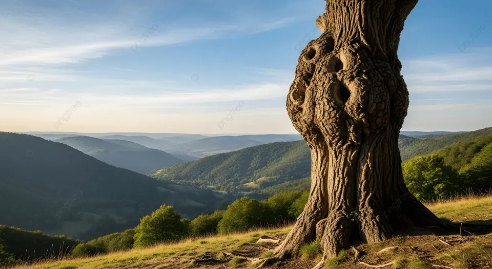

The Story
While human history is measured in decades and centuries, the timeline of an ancient tree is measured in millennia. High in the mountains of North America, the Great Basin bristlecone pines endure freezing temperatures and fierce winds. Some of these twisted, weathered survivors are over 4,800 years old—meaning they were already saplings when the pyramids of Giza were being built.
Across the ocean in Africa, massive Baobab trees serve as ecosystems of their own, storing thousands of liters of water in their swollen trunks to survive harsh droughts. Meanwhile, clonal colonies like 'Pando'—a forest of quaking aspens in Utah connected by a single, massive root system—have been regenerating for an estimated 80,000 years. They have survived ice ages and massive environmental shifts by continuously renewing themselves from beneath the soil.
The secret to their immortality lies in their resilience. These ancient sentinels grow incredibly slowly, prioritizing defense over rapid expansion. Their dense wood resists insects and rot, and when struck by lightning or ravaged by fire, parts of the tree may die while the core lives on. In their tree rings, they keep a perfect, biological diary of the Earth's climate history, recording periods of rain, drought, and atmospheric changes long before human instruments existed.

Philosophical Questions
What does time mean to an organism that lives for millennia?
Humans experience time as a fast-paced rush of fleeting moments. For an ancient tree, a single human lifespan is but a brief season. Their existence forces us to reconsider our own pace of life and our perspective on what is truly permanent.
This challenges the human instinct to measure the world entirely by our own short-term experiences, reminding us of the deep, slow rhythms of the Earth.
Are we preserving individuals, or living history?
When an ancient tree falls, it is not just the loss of a plant, but the destruction of a living archive. These organisms carry the biological memory of the planet.
This raises the question of whether our conservation efforts are merely about protecting nature, or if we are actually guarding the oldest libraries of life on Earth.
Does true strength lie in stillness?
In a biological world where animals flee from danger, trees must stand their ground. They endure every storm, drought, and harsh winter without the ability to run or hide.
Their survival for thousands of years proves that true strength does not always come from action or dominance, but from unyielding endurance and the quiet ability to adapt to whatever the universe brings.